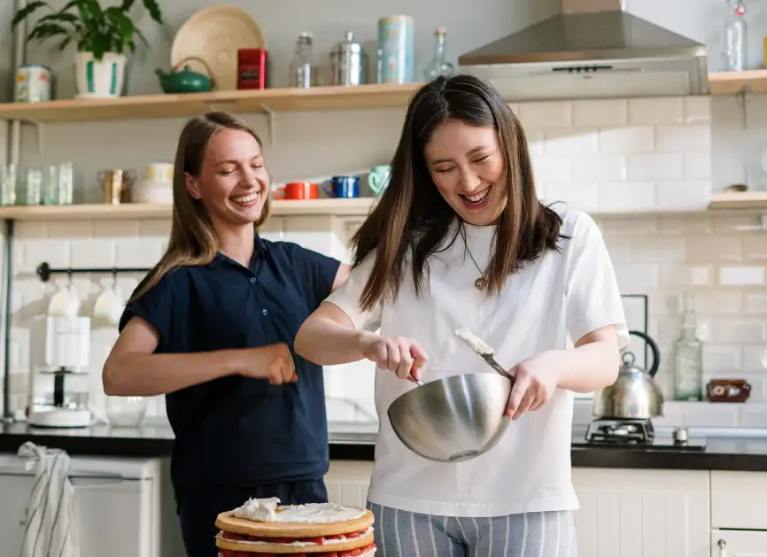

Meet Our Team!
Procrastibake started as an idea for a web design assignment at university. I compiled and modified my favourite baking recipes to make them easier to read and follow. I also combined elements of multiple recipes to ensure I provided the best recipes to my readers. From there, some friends asked to join in and add their favourite baking recipes. The team at Procrastibake prioritises the quality of recipes. Before we publish a recipe, the whole team has to approve it.
Our Mission
Our mission is to be a go-to website for students to destress by baking delicious treats. Our team at Procrastibake all agree that high school and university work often overwhelms us and leaves us feeling stressed and unmotivated. We usually procrastinate by scrolling on social media, leaving us more unmotivated. However, a form of procrastination we found left us feeling uplifted and productive was Procrastibaking! Our recipes are selected with students' busy schedules in mind to provide a perfectly timed study break. Baking is proven to relieve stress by releasing feel-good endorphins. Plus, who doesn't love a sweet treat?!